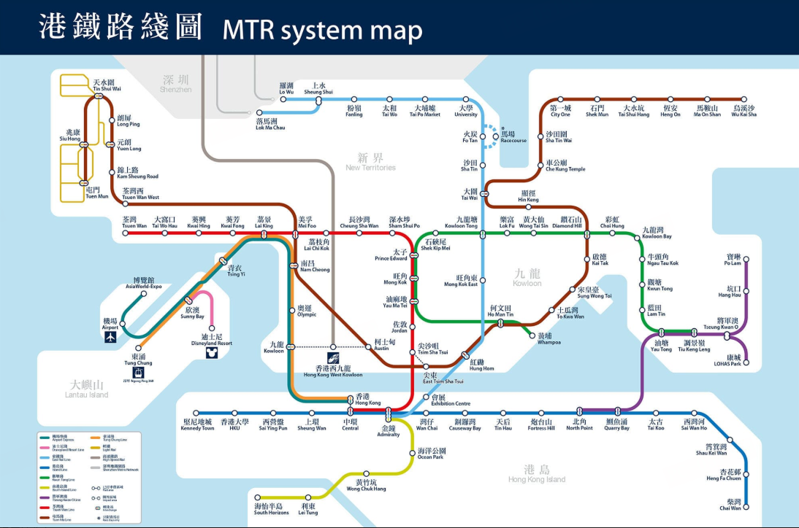

Hong Kong Day Trip
Tina的香港1日计划~！
景点卡片：
01
文武庙
香港西九龙站（高铁）
02
嘉咸街涂鸦墙&艺穗会
文武庙→嘉咸街约 5 分钟
03
无名楼梯
艺穗会→步行约5分钟
04
美利大厦&旋转水涡
从中环街市步行约3分钟
05
天桥S弯
从石板街步行约5分钟
06
坚尼地城-海景
港铁中环站→坚尼地城站（港岛线，约 15 分钟），或叮叮车（约 25 分钟，$3）
07
坚尼地城-咖啡
坚尼地城站C口：HONG KONG BE HAPPY咖啡厅
08
西环泳棚
从坚尼地城站步行约10分钟，沿斜坡下行至海边
09
天星小轮
（维港）
港铁：坚尼地城站→中环站（港岛线，15 分钟），步行至中环天星码头
10
尖沙咀
从尖沙咀码头步行至海港城海运大厦地下，约5分钟
11
返回西九龙站
尖沙咀站 → 荃湾线 → 佐敦 / 柯士甸站 → 步行至西九龙高铁站（约 15 分钟）携程
12
旺角（如果有时间）
从尖沙咀乘荃湾线到旺角站，约10分钟
13
庙街（如果有时间）
从旺角步行至佐敦方向，约10-15分钟
Hong Kong MTR system map
